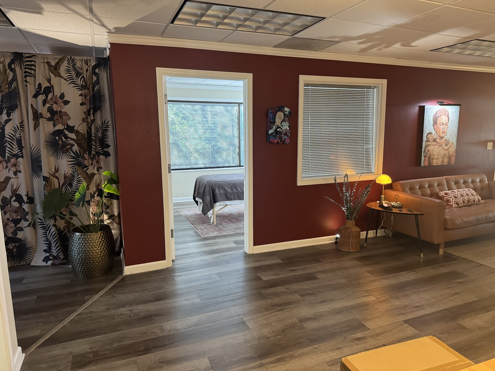
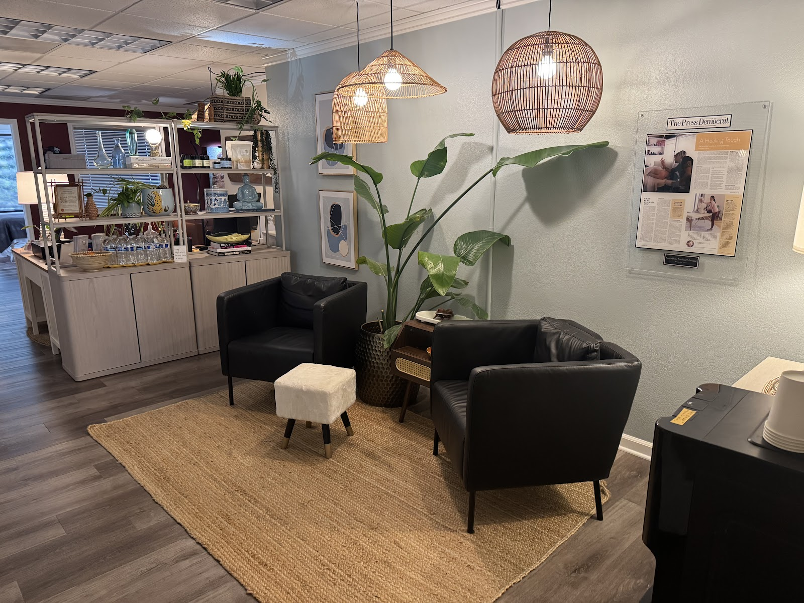
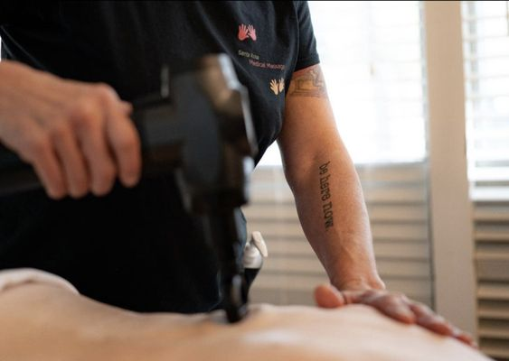
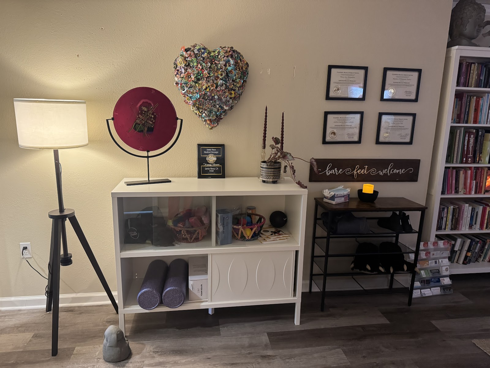
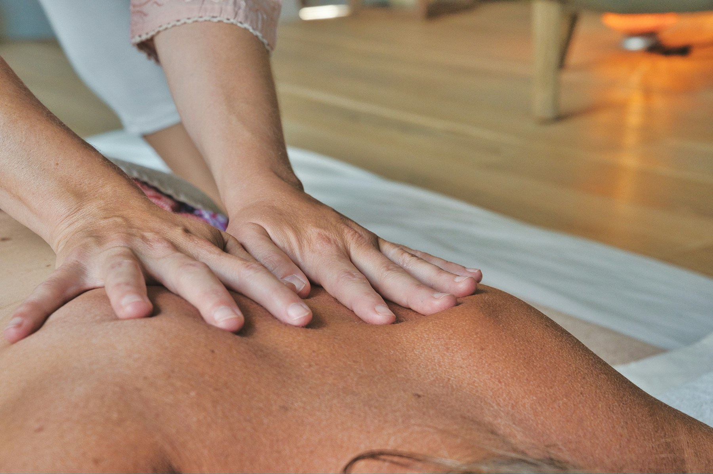

1/35
Trigger Point Therapy
Targeted soft-tissue work for knots, tight bands, and referred pain.
In the heart of downtown Santa Rosa, there’s a place to slow down, share what you’ve been feeling, and talk about the things you would like to do more comfortably. You don’t need to know which treatment to choose, or have the perfect words for what’s wrong.
Our focus is soft-tissue care with personal attention. Whether you’re navigating a recurring concern, returning to activities you enjoy, or making room for ongoing care, we begin with your experience, your questions, and your comfort.

1/35
1/35
1/35
1/35
1/35Care begins with listening. Share where you feel tension, which movements are difficult, and what you hope to return to. Your preferences and relevant health history help guide the conversation about treatment.
We know that choosing care can bring questions. Talk with us about practitioner experience, what a session involves, and anything that would help you feel more comfortable before your first visit.
Walking, stairs, gardening, and a comfortable night’s sleep all matter. As your needs change with age, bring those everyday goals to your session. Talk with your therapist about a comfortable pace and whether follow-up care makes sense for you.
Targeted soft-tissue work for knots, tight bands, and referred pain.
Condition-focused massage for concerns that have been diagnosed by a medical professional.
Focused, full-body care for persistent tension, movement restriction, and recovery.
Exceptionally light-touch work intended to support and stimulate the lymphatic system.
Restorative full-body massage for relaxation, stress release, and general wellbeing.
A body-centered approach that can support people working with post-traumatic stress.
A familiar concern or a change in how you move can be a starting point. Tell us what you notice and what you hope to return to.
Alternate layout
Open a category to see the concerns within it.
“I think I found the one.”Annie ZaksGoogle
“Absolutely top notch… Highly recommend!”Anne AllmanGoogle
“I immediately made another appointment… in 75 minutes, I received more attention, expertise, therapeutic intervention and relief than I’d had in years.”Susan D.Yelp
“They work magic.”Isis HowardGoogle
“Avocado took the time to listen to me and get to know me and my pain before we began. I felt more at ease and grounded after.”Annie L.Yelp
People love the care here.
Looking for soft-tissue support alongside medical care or rehabilitation? Contact the practice to discuss a patient’s goals, relevant guidance, and practitioner experience.
Relevant guidance from a medical or rehabilitation team can help inform the discussion. Contact us before sending private patient information.
630 Third Street, Suite B, Santa Rosa, CA 95404
Private parking. Visits by appointment.
Get directionsAsk about session lengths, current pricing, payment, receipts, or access needs.
A client describes how a third visit became an extraordinary experience.
A bodywork therapy for the mind, body, and soul, using focused work through the feet and lower legs.
An introduction to Thai bodywork, including Tok Sen and its cultural roots.